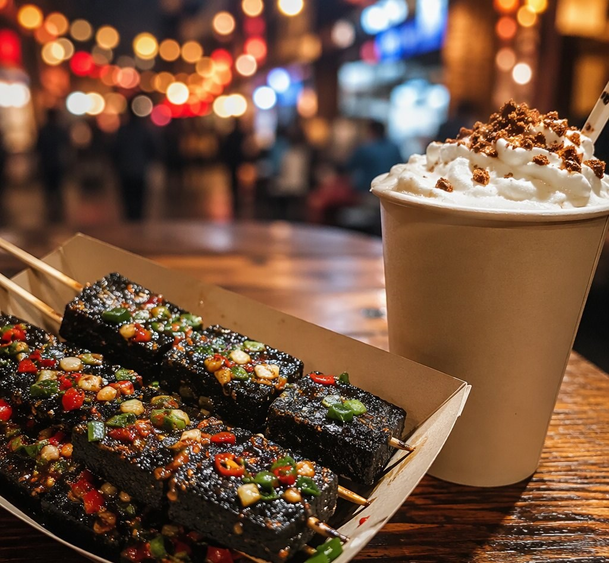

长沙老街烟火
Old Street石板路、红灯笼，巷子里的烟火气从清晨烧到深夜。

湖南 · 长沙 · CITYWALK
CHANGSHA CITYWALK
一座城市的慢节奏——从清晨的米粉香，到深夜的民谣与霓虹，用一天时间，把长沙走成自己的。
向下滑动 · 开始漫游
Impression
石板路、红灯笼，巷子里的烟火气从清晨烧到深夜。
一江两岸，灯火倒映，晚风把白天吹成了霓虹。

臭豆腐配奶茶，辣与甜在这里握手言和。
Route
09:00
青石板路与百年老店，从一碗肉丝粉开始。
点击查看详情 →
11:30
火宫殿的臭豆腐，是这座城市的见面礼。
点击查看详情 →14:00
千年学府，在古树与碑刻间坐一会儿。
点击查看详情 →
17:00
湘江中心的绿岛，看一场江上日落。
点击查看详情 →
20:00
老巷入夜，民谣与霓虹刚刚开场。
点击查看详情 →Hidden Gems
示意地图 · 点击图钉查看去处
Food Guide
Tips
6 条主线覆盖主要景点，橘子洲、岳麓山、五一广场均可直达，支持乘车码。
线路密集、票价两元，老街片区公交比打车更快，高峰期优先选择。
老城区巷子多，共享单车加步行，才是打开长沙的正确方式。
吃喝玩乐下楼即达，夜生活零距离，适合第一次来长沙的人。
夜景房视野开阔，看一江两岸灯火，适合慢游与纪念日。
性价比高、文艺氛围浓，步行可达后湖艺术区，适合长住慢逛。
湘菜默认中辣起步，备好肠胃药，微辣是对自己的温柔。
热门商圈傍晚最挤，行程尽量早出晚归；岳麓书院周一闭馆，记得提前预约。
白天暴晒，橘子洲与岳麓山安排在清晨或傍晚，体感会好很多。